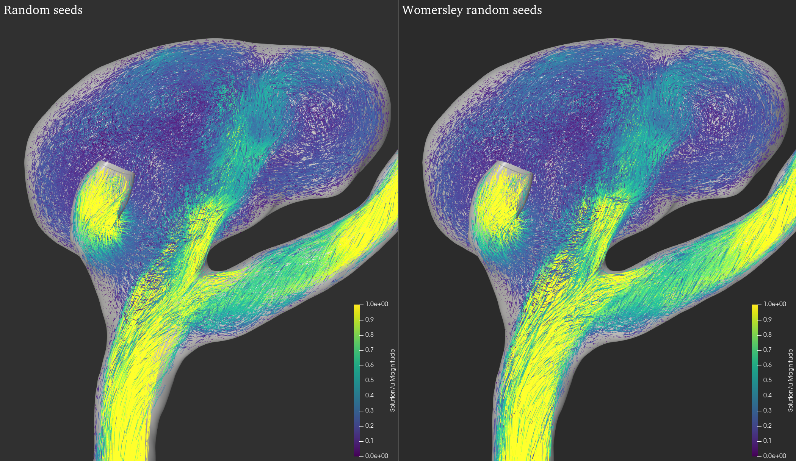
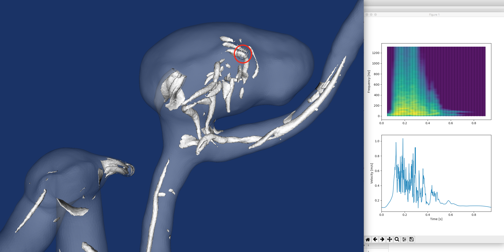
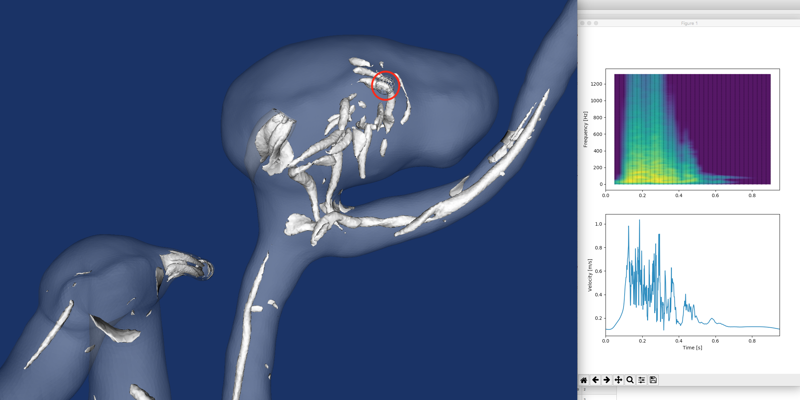
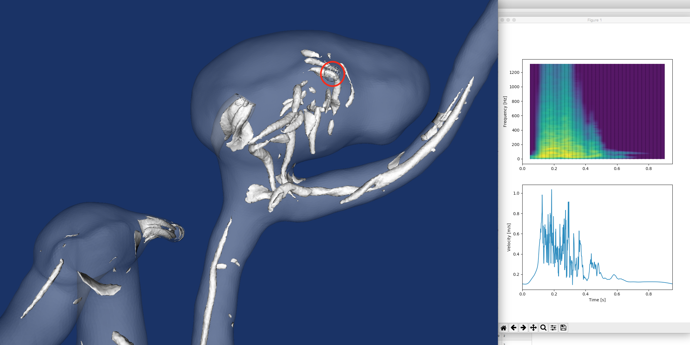

Highlighting particles that enter into the sac, also kept outflow colour from before. Two views shown, rotated ~180 degrees about parent artery. The right view better shows flow entering the sac, and the left view (the same view from the original visualization below) shows better flow leaving the sac. A next step with this is to better emphasize flow entering/leaving the sac
embedded youtube link because file is too large for github, try to switch to highest quality possible
06/16/2020 seeding comparison
Important ***** note that videos and images below say 'Womersley Seeds' but this is not correct - I forgot to change the labels when I rendered. This approach assumes a parabolic velocity profile at the seeding loction and is modulted by the driving waveform
seed the same total number of seeds (i.e., 500pts*1250timesteps= 625,000 seeds)
Image below shows a sample of seeds generated at a timestep, and the graph shows the number of seeds injected vs. timestep
and below is an example of the seeding and points tracked for a few timesteps at the seeding location
Timestep 1000 of 1250 Timestep 1100 of 1250 Timestep 1200 of 1250
06/11/2020 seeding comparison (incorrect)
Comparing seeding strategy from before (seeding 500 random particles every timestep) to a more 'uniform' random seeding strategy that seeds where velocity is higher
In the new approach we seed the same total number of seeds (i.e., 500pts*1250timesteps= 625,000 seeds in total), however their distribution in time and space is proportional to the inlet velocity profile,
Image below shows a sample of seeds generated at a timestep, and the graph shows the number of seeds injected vs. timestep
and below is an example of the seeding and points tracked for a few timesteps at the seeding location
The video below shows a comparison of either seeding strategy. I had to compress the video to upload to github and there is some detail lost which makes it more difficult to do a comparison.
They seem to be pretty similar, but it does seem to be apparent in the womserley seeding that there are less particles in the domain when the velocity is lower, as expected. Maybe the comparison is misleading as both are very dense. There are some still image comparisons below as well
Timestep 1 of 1250
Timestep 100 of 1250
Timestep 200 of 1250
Timestep 300 of 1250
 Timestep 400 of 1250
Timestep 500 of 1250
Timestep 600 of 1250
Timestep 700 of 1250
Timestep 800 of 1250
Timestep 900 of 1250
Timestep 1000 of 1250
Timestep 1100 of 1250
Timestep 1200 of 1250
06/04/2020 Case 32 coloured by outflow
C0053
05/26/2020 Dense random seeding
all cases seeded with 500 random points at each timestep. Colour scale is kept the same in all cases except for case 04 where it is slightly adjusted. The geometry is rendered as a lighter colour, trying to make it easier to see darker slower moving particles. I have also changed the rendering style to try and communicate more geometric information
C0053
C0060
C0012
C0004
C0032
05/22/2020 C0053 Q & pathlines
Do Nothing
Do Nothing w/ opaque pathline
Precompute pathline similarity, cutoff ~25% above and below the mean (i.e., 50% reduction)
Same as above with opaque pathlines
Random sample of ~50% of pathlines
Random Seeding - 40 pts/step
Same as above with opacity
Random Seeding - 500 pts/step, lines only *incomplete*
Random Seeding - 500 pts/step, lines & q *incomplete*
Case 0004 - same seeds
Case 0004 - random seeds
05/08/2020 C0060 pathlines
Visualizations that show (1) line similarity, (2) pathline length, and (3) particle age
1. Line similarity
The goal here is to reduce the visual cluter created by pathlines that trace out similar trajectories. In other words, looking to find the most 'representitive' pathlines. This approach takes a set of pathlines, and for each pathline computes its similarity in 3d to a sample pathline from the set. The simialrity is measured for each trajectory using the dynamic time warping (DTW algorithm). A dtw distance of 0 means that two lines are identical, and larger values mean that there is more distance between the lines at their respective discrete points (in this case, timesteps). The example below shows the distribution of 'similarity' for precomputed pathlines from case 60, we see it is somewhat bimodal which most likely captures the pathlines that go directly to the two outlets. To visualize the different groups of similarity, the pathlines are binned based on their similarity measures. The example below shows this using a bin spacing of 200 (eyeballed from the distribution). Once the are binned, one pathline is taken from each bin as a 'representitive' sample of that pathline bin. The example below shows how we go from a large set of computeed pathlines to 10 representitive samples.
First, here are all the pathlines. Computed for 2 cycles, seed 10 points every timestep for one cycle. The colours represent the bins described above
Here is the distribution of DTW distances between each pathline and a sample pathline form the set. Note that it is somewhat bimodal, which I think shows the pathlines with similar trajectories that flow directly to outlets
Now we bin the distribution of similarities and take 1 sample from each bin. In the image below we see one sample per bin (as represented with the discrete colour map, which, by the way, I am not sure how useful the colour coding is yet). There are 10 bins that are 200 units apart
and tried a render with wider tubes -- there is less dead space, which i find makes it easier to follow each unique path (but maybe this is too wide)
Very preliminary - but here is a pathline animation of the above case that colours lines by their respective bins. The eventual goal here would be to only render a certain number of lines from each bin to reduce clutter but maintain representation of the flow. We can see in this video that groups of pathlines with similar trajectories are coloured the same (i.e., they are in the same bin), so a next step is to figure out how to only render a representitive sample from each bin (i.e., the dynamic version of the images above).
Questions to explore further
Is this result more representitive of the flow than just simply taking a spatially stratified random sample of pathlines? Are there better ways of computing pathline similarity - different algorithms, different ways of dividing the geometry (i.e., similarity is computed between entire pathlines, how would this change locally)? Right now we are just taking the first pathline form each bin and rendering it, is there a better way of choosing more 'representitive' pathlines from each bin? How does bin selection impact the representation of the flow? Can the process of manually binning pthlines be replaced by some clustering algorithm? And of course, how does this look for other cases?
2. Total Line Length
The goal with this is to try and emphasize pathlines in recirculation areas. Initialy, I tried doing this with particle age (below) but I found that particles that linger in the sac towards the end of the cycle (i.e., after the chaotic flows have calmed down) tend to bias the emphasis towards the end of the cycle. The idea here is to emphasize longer pathlines in order to better communicate regions of recirculation, and emphasize less the pahlines that simply enter the sac and immeadiately exit. The examples below are shown for the same pathlines as above, with precomputed lengths
First, here are all the pathlines computed and coloured by their length (as a side note these visualizations aren't very useful for, as the pathlines that move close to the wall occlude everythin else, but I tried playing with opacity and the reslts are somewhat interesting (below))
And here is the distribution of pathline lengths
Based on this, I binned the pathlines into 'long' and 'short' groups using a cutoff length of 350 (just over the distribution mean, which in retrospect maybe was not the best idea, as there is a large group of pathlines that just continuously exit towards the left outlet, which probably contribute to this skew). The animation below shows short pathlines greyed out and opaque, with longer ones solid and yellow. I found that removing short lines completely can make it difficult to make sense of the overall movement of the flow.
In general, I am not sure that this (in its current form) helps to reduce occlusion/to make sense of the flow during peak systole, the pathlines are still very chaotic at this point, but fairly easy to understand after. I haven't had much chance to play around with different bins/mapping strategies, etc..
This is a static visualization I did, which shows all precomputed pathlines. They are very opaque in order to get a sense of bulk movement. The colour scale here shows length. We see almost like a 'hole' of long pathlines in the center of the sac suggesting recirculation
3. Particle Age at Exit
Similar to above, the goal here is to better emphasize recirculation areas. Here, we precompute the age (in number of timesteps) of each pathline when it exits the domain. I chose to precompute this and assign each pathline a static age value because I thought there would be too mch happening at once if pathlines changed dynamically based on thier age. As mentioend, I don't think this is the best approach, as it seems to heavily skew towards particles that reside in the sac after peak systole when the flow has calmed down.
here is the distribution of pathline age at exit
The idea of this animation is the same as above. I chose an age cutoff of 150 under which I render pathlines as grey and opaque, and over which they are solid and yellow. The results seem pretty similar to above, though both are preliminary, and I haven't done too much optimization of the visualization parameters yet. Note also, there is a more preliminary version of this below
Similar to above, here is a static render of all opaque pathlines, coloured by age
05/05/2020 C0060 outflow mixing and particle age
Outflow
Seeding 5 points every timestep, tracking for 10 timesteps, Width 2. This is somewhat better than the single coloured visualization below, especially after peak systole where recirculation is much easier to see.
Seeding 5 points every timestep, tracking for 20 timesteps, Width 3. Trying wider and longer tubes. Creates more occlusion but definately communicates the bulk circulaiton better. Still difficult to get a sense of what is happening at peak systole.
Seeding 5 points every timestep, tracking for 20 timesteps. Ribbon width 0.1 . This is too occluded and the lighting scheme makes it difficult to perceive depth (Actually I would say this is an issue case with all of these, but this one more so). I think the ribbons give a better sense of the bulk/global dynamics but occlude much more than pathlines/tubes, hiding other information.
Particle Age on Exit
Precomputing particle age on exit. Trying to get a sense of which pathlines entering the sac are staying there for the longest. Mapping to colourscale and opacity (redundant). Perhaps here the opacity and/or the dark colour on the background blends in too much making it difficult to perceive the 'younger' pathlines. Although this is the goal, we are losing too much information on the bulk flow characteristics and often the more solid lines just look like random movement. In the first few seconds of this video it is difficult to make sense of the flow. Once more defined circulation begins, it is somewhat easier to make sense of recirculation areas. Another issue is that this is biased towards particles at the end of the cycle when the flow is generally moving slower. For example, a particle injected around peak systole may move along a long recirculating path, but will do so more quickly, and therefore have a shorter age on exit than a particle injected later in the cycle that may move less distance (or not even recirculate) but reside in the sac for longer. Perhaps using total path length may help to get a better sense of this, also maybe considering different types of recirculating points as in that paper.
05/01/2020 Q Isosurface Colour by narrow:broadband ratio
Prototype Visualization
Adapted from the sonification project, we now take the sum of power contributed from the narrowband harmonics of a single FFT trace of spectrogram and divide it by its interpolated FFT power falloff. The closer a value is to 1,the more 'harmonic' its FFT (i.e., the more power its peaks have with respect to the smoothed interpolated falloff) at that point in time. Tried also taking the ratio of total narrowband to total power, and the results are similar. In the visualization below, we can see that most of the harmonic spectrogram regions come from that T junciton shaped region along the bottom. The spectorgram in the sac is mostly broadband, except for slightly downstream from the neck, where we see some banded structrues, consistent with what we get when we look at the actual spectrograms (at the bottom of this page). This is limited by 36 timesteps, as it currently matches the time resolution of the spectrograms. Also the paraview filter that extracts connected surfaces maynot be the best for this - if any two points are touching they are considered one surface which may not be the case (eg., if two blobs are coming into close contact), but in general this seems to be an okay approximation as the colouring seems to identify where the 'harmonic' structures are reletively quickly without having to probe around and look at local spectrograms. Still only rendering individual points, haven't mapped to the original surfaces yet. Threshold=1
Q-criterion threshold at 0.5 for all. Pathlines are seeded with 5 points injected every timestep and tracked for 10 timesteps. Tried t keep view/orientation similar where possible.
c0053
Seen this one already, but visualized here under different parameters for comparison. The most unstable of the three cases. Pathlines get very chaotic, and we see lots of vortex shedding in the Q-visualization.
Spectrograms at diferent locationsQ-Criterion
24 fps, slower than others because this one has the most activity
Pathline
c0012
This sac has a very complex gemoetry, have included two different views, in general I think the second one works better. There is minimal high frequency content in the sac, and seems to be a very steady recirculation zone in the larger bludge, with almost no high frequency content. There is almost no movement in the Q-criterion visualization.
Spectrograms at diferent locations
Minimal broadband content in the sac spectrogram
Q-Criterion
Pathline
c0060
Unlike the others, we see frequency content at 200 Hz and above persist into the cycle. The falloff of power is reletively smooth (we don't see any harmonics). We can see Q-isosurfaces develope but they do not seem as chaotic as C0053
Spectrograms at diferent locationsQ-Criterion
Pathline
I wonder how the orientation of the outflow branches impacts the flow/presences of instabilities. In case 12 the outlets seem to be almost symmetrical about the parent artery. Case 60 has symmetrical outflow branches, but one is offset higher than the other. In Case 53, the outflow branches seem to almost be orthogonal and offset.
04/24/2020 Q-criterion and Spectrograms
Preliminary Visualization
Iso-surfaces of Q-criterion, threshold set at 1. We see a lot of activity at the branch along the bottom as well as at the flow into the sac. Wanted to see what the pathlines look like at these regions
Pathlines
Can see what looks to be vortical flow in that same branch at the bottom.
Spectrograms at different locations
Took a sample of Q-criterion isosurfaces at timestep about 1/3 into the cycle and imported this into Dan's spectrogram tool to compare different regions of Q-iso surfaces to spectrograms. Some screenshots are below:
For starters, the global spectrogram
The image below shows where I think the source of the harmonics in the spectrogram is.
We can see that moving slightly away from this region, there is a very different spectrogram
Images below will show other regions.

Prototype of spectrogram & q-isosurfacce visualization
It is apparent that different Q-isosurfaces have different spectral content. Using the paraview connectivity filter, we can identify groups of q-isosurfaces that are connected. For each group, we can take its points and compute their local spectrogram. Now, we need a way to visualzie some property of the spectrogram on the isosurfaces themselves to be able to show local variations. As a first pass at this, borrowing from the previous sonification project, I compute the slope of the interpolated power fall off of a spectrogram's FFT. The idea is that slopes closer to 0 indicate the flow is more broadband, and stteper slopes are more narrowband. The taking 36 timesteps of Q-criterion isosurfaces and roughly mapping them to the 36 timesteps in a spectrogram we can make the following pipeline: 1. compute q-criterion isosurfaces. 2. Get connected regions 3. For each connected region, take its points and compute their spectrogram. 4. Extract the spectrogram timestep that corresponds to the current frame and interpolate its slope. More broadband spectrograms will have a slope closer to zero.


 Q-Criterion
Q-Criterion
 Q-Criterion
Q-Criterion


 Q-Criterion
Q-Criterion


 
